The following pictures show n unit octagons packed inside the smallest known circles (with radius r).
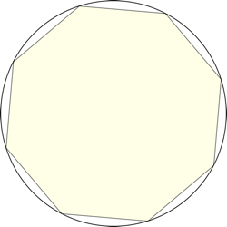 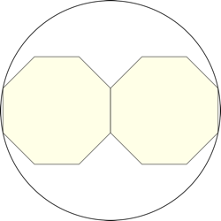 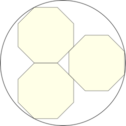 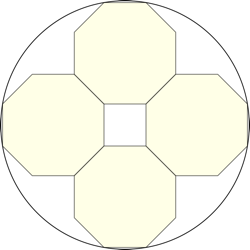 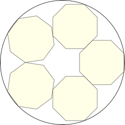 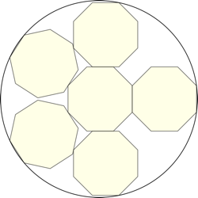 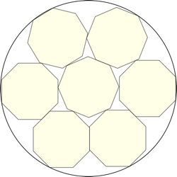 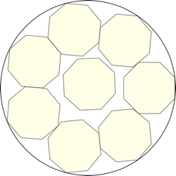 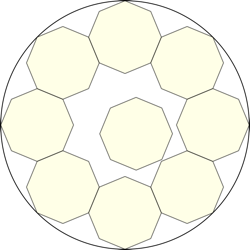 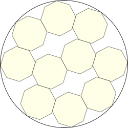 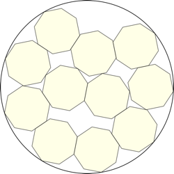 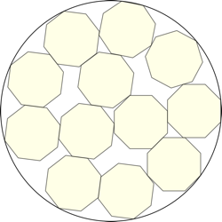 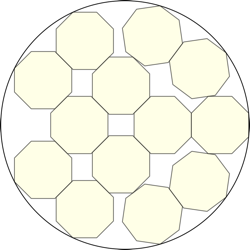 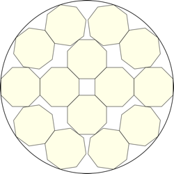 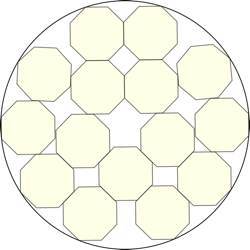 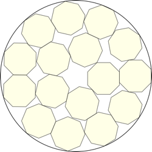 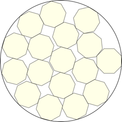 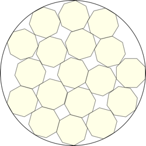 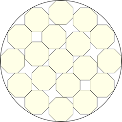 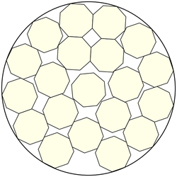
1.
r = √(1+1/√2) = 1.30656+
Trivial.
2.
r = √(13/4+2√2) = 2.46544+
Trivial.
3.
r = 2.71611+
Found by Jonathan Viquerat
in June 2026.
4.
r = √(9/2+3√2) = 2.95679+
Trivial.
5.
r = 3.37974+
Found by Jonathan Viquerat
in June 2026.
6.
r = 3.69797+
Found by Jonathan Viquerat
in June 2026.
7.
r = 3.77329+
Found by Jonathan Viquerat
in June 2026.
8.
r = 4.12460+
Found by Jonathan Viquerat
in June 2026.
9.
r = 4.46088+
Found by Jonathan Viquerat
in June 2026.
10.
r = 4.72215+
Found by Jonathan Viquerat
in June 2026.
11.
r = 4.88201+
Found by Jonathan Viquerat
in June 2026.
12.
r = 5.00001+
Found by Jonathan Viquerat
in June 2026.
13.
r = 5.23457+
Found by Jonathan Viquerat
in June 2026.
14.
r = 5.34131+
Found by Jonathan Viquerat
in June 2026.
15.
r = 5.60687+
Found by Jonathan Viquerat
in June 2026.
16.
r = 5.73298+
Found by Jonathan Viquerat
in June 2026.
17.
r = 5.94448+
Found by Jonathan Viquerat
in June 2026.
18.
r = 6.05968+
Found by Jonathan Viquerat
in June 2026.
19.
r = 6.07328+
Found by Jonathan Viquerat
in June 2026.
20.
r = 6.36903+
Found by Jonathan Viquerat
in June 2026.